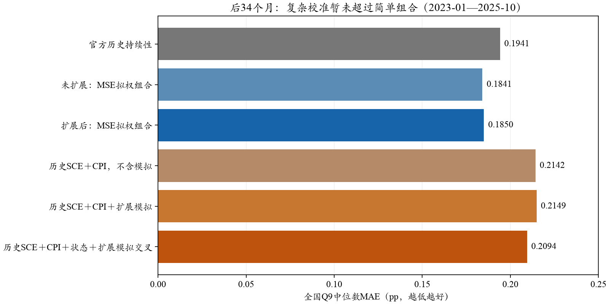
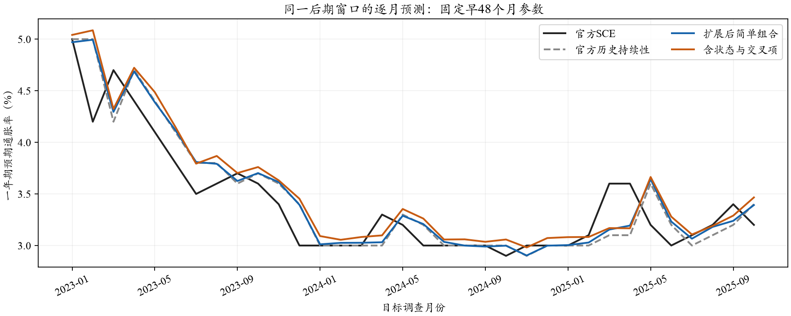

SCE · A82历史重建的离线宏观校准 · 0新API · 0新密度拟合 · 原结果保留
全国主结果对照官方SCE；当前简单组合优于本轮复杂校准
固定原τ=8扩展，MSE在早48个月拟得模拟权重13.50%。后34个月MAE为0.1850pp，持续性基线为0.1941pp。加入CPI、状态和交叉项的初步方案暂未超过简单组合；不据本页自动切换配置，τ约202不采用。
1．真值与基线是两个不同概念
全国真值采用纽约联储发布的当月SCE一年期预期通胀率，主表沿用新闻稿首发的一位小数值。持续性基线则使用原登记截止前最后公开的官方SCE值；因发布时间先后，有时不是紧邻上个月。两者都不是本项目自行重算的全国SCE。
官方说明预期通胀率来自各人Q9密度均值的中位数，Q8点预测另列。参见纽约联储FAQ。本项目模型和真人微观比较共同使用冻结近似计分器，不能声称完全复刻官方密度拟合与汇总。
把真人原始答卷按本项目算法重算，再与官方全国值比较，82个月平均绝对差0.0269pp，最大差0.1278pp。它包含密度拟合、样本清洗、权重、分位数及公布精度等差别，不能全归因于某一项，也不能直接从模型MAE里减去。
同算法真人目标下，原Core与扩展的中心MAE为0.2900和0.2920pp；官方目标对应0.2984和0.3014pp。主报告保留官方结果，微观机制评价另报同算法结果，不按成绩选择目标。
2．过采样、降权与Normal怎样衔接
实际Core名单沿54格采样，每个有人的小格尽量保底8名，余量按人口质量分配，且不重复抽同一人。格内抽样概率π=n/N；设计权重为原调查权重/π，再校准回真实格质量。因此小格在Core中可占较大比例，但汇总不会增加其人口占比。这套缩放在原512人抽样时已经存在。
Normal扩展估计条件分布时复用Core校准权重；计算完整有限人口时，实际Core只保留自己的原始调查权重，Normal也只贡献自身质量一次。不会把已放大到全人口的Core，再与完整Normal重复叠加。98,382个人月仍只有41,970个真实模型Core，统计扩展不增加独立信息。
τ是相邻格的等效先验强度，不是202个真实邻居；应与每格有效Core人数比较，而非与全月1300比较。若一格有效10人，τ=202使同格在Normal条件分布中仅占4.7%，确实是很强的汇聚，不能仅凭训练误差略低就采用。
3．扩展后的加权平均效果
组合形式为：历史官方SCE×(1−λ)＋当月模拟SCE×λ。只在2019-01—2022-12拟合λ，检查2023-01—2025-10。MAE拟权时λ=0，没有保留模拟；MSE拟权时λ=0.134964，后期MAE0.184980、RMSE0.256700pp。未扩展组合对应0.184125/0.256272pp，因此扩展没有带来新的组合收益。
扩展组合全82个月MAE为0.222969pp，持续性为0.223171pp；全期包含训练月份，不能作为独立检验。后期MAE差值的六个月块区间跨零，改善仍有限。
4．复杂模型：先做受控的小比较
用已公开历史SCE作锚，预测当月相对该锚的变化。候选因子为历史SCE水平、最新已发布CPI同比与锚的差、CPI同比相对前次发布的变化、模拟与锚的差。状态方案另加CPI≥4%的预设虚拟变量及其与模拟差值的交叉项；阈值未优化。
所有线性方案使用岭回归（含不惩罚的截距），正则强度仅在早36个月训练、随后12个月验证选择，再用早48个月重估并封存系数。后34个月没有用于选强度。CPI使用原月度参考截止前的BLS首发；不拿尚未发布的目标月实际CPI作因子。宏观不含模拟的模型作为配对对照，避免把CPI的贡献算成模拟的贡献。

2023-01—2025-10，34个月等权，纵向标签区分方法，横轴单位pp且从0开始。蓝色为简单组合，橙色为更复杂的统计校准。
| 模型 | 训练48月MAE | 后34月MAE | 后34月RMSE |
|---|
| 官方历史持续性 | 0.2438 | 0.1941 | 0.2701 |
|---|
| 未扩展Core原始模拟 | 0.3578 | 0.2146 | 0.2831 |
|---|
| 扩展后原始模拟 | 0.3595 | 0.2194 | 0.2857 |
|---|
| 未扩展：MSE拟权组合 | 0.2496 | 0.1841 | 0.2563 |
|---|
| 扩展后：MSE拟权组合 | 0.2499 | 0.1850 | 0.2567 |
|---|
| 扩展后：MAE拟权组合 | 0.2438 | 0.1941 | 0.2701 |
|---|
| 历史SCE线性校正 | 0.2402 | 0.2277 | 0.2951 |
|---|
| 历史SCE＋CPI，不含模拟 | 0.2352 | 0.2142 | 0.2845 |
|---|
| 历史SCE＋CPI＋扩展模拟 | 0.2332 | 0.2149 | 0.2829 |
|---|
| 历史SCE＋CPI＋状态，不含模拟 | 0.2104 | 0.2421 | 0.3534 |
|---|
| 历史SCE＋CPI＋状态＋扩展模拟交叉 | 0.2321 | 0.2094 | 0.2814 |
|---|

单位%；均为同一后期窗口。参数来自早48个月；这不是新封存的未来预测。
5．怎样理解与采用
这轮复杂模型在训练集看起来更好，但后期没有超过简单组合。在相同CPI线性结构中加入扩展模拟，MAE由0.2142变为0.2149pp；含状态与交叉项时约0.2094pp。只能说本轮预设的小组方案未提供更好的后期MAE，不能据此否定所有时序方法。当前不再追着后期误差调虚拟变量或挑年份。
宏观拟合的独立时间样本只有82个月，不是98,382个人月。A模拟含个人日期的信息，CPI与官方历史锚按原共享参考截止；组合仍属历史重建诊断，不等于同一截止前可实现的严格B预测。两段历史都曾被查看，后34月不称新的盲测。以上结果是衍生预测指标的性能，不是LLM个体行为机制已获得验证。
方法与全部复算入口 · 原Core＋Normal报告 · τ宽范围搜索
来源：outputs/sce_full_a_macro_calibration_20261026_v1；逐月公开宏观输入/预测、训练内选参及系数全部单独保留。官方FAQ核查日2026-10-26。原A/B生成、τ8预测、τ敏感性、报告v05和研究包v02不覆盖。